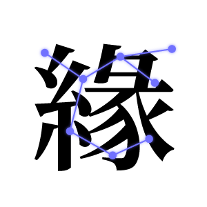

가장 선명한 기억을 담아두고, 정해진 주기에 맞춰 다시 경험합니다.
나의 기억을 그대로 다른 사람에게 전합니다.
고인의 기억과 음성, 영상, 성격을 바탕으로 아바타를 구현해 4D 공간에서 마지막 대화를 나눕니다.
개인의 경험을 다음 세대를 위한 기억으로 남깁니다.
잃어버린 기억을 복원하여 삶의 연결을 되찾습니다.
기억 속에 남겨진 단서를 통해 사건의 진실을 밝힙니다.